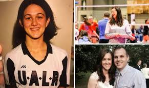
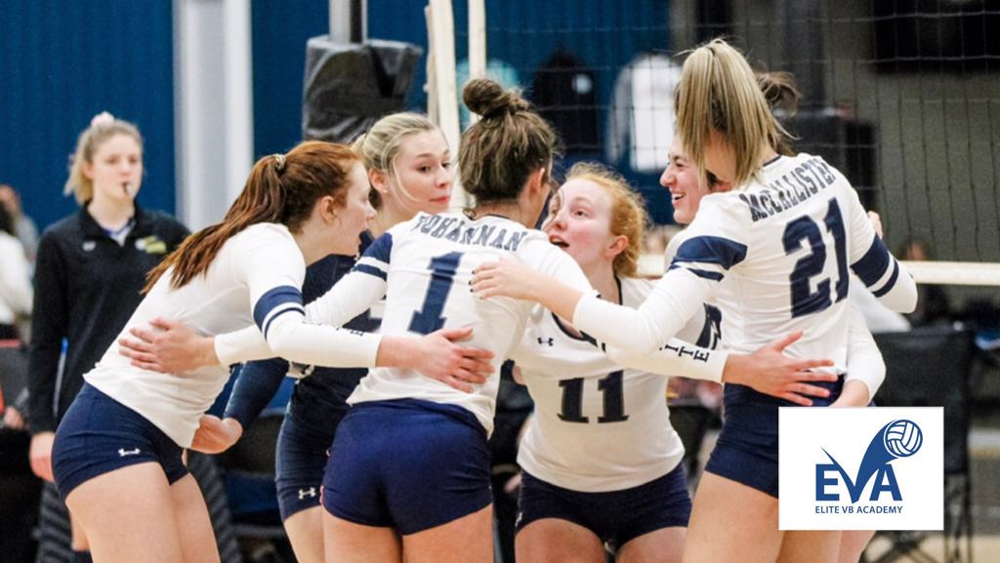
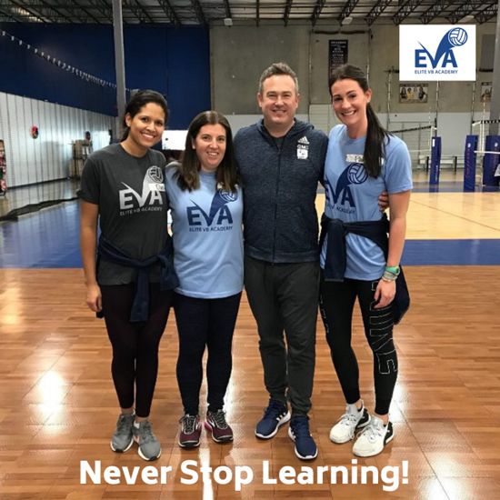

DIRECTOR - MASTER COACH - RECRUITING COORDINATOR - EVA 16 ELITE HEAD COACH - EVA 18 ELITE ASSISTANT COACH
Tanja Eckart has an extensive career in volleyball as both a coach and a player. Currently in her 8th season as the Club Director of Elite Volleyball Academy (EVA), Eckart has over 25 years of coaching experience, including stints at both the collegiate and club levels. She is known for guiding her teams to national recognition, with notable achievements including leading her EVA 16 National team to a bid at the USA National Championship and winning the AVCA 2020 16’s Coach of the Year award. Her coaching philosophy emphasizes hard work, positive environments, and quality training. Under her leadership, EVA has grown significantly, from its inaugural season with three teams to seven teams, including multiple teams qualifying for prestigious national championships. Eckart’s playing career is equally impressive. She was a standout player at the University of Arkansas at Little Rock (UALR), where she set numerous school records and earned multiple individual honors, including Sun Belt Conference Player of the Year. She went on to play professionally in the USPV league with Chicago Thunder, joining top players in the nation. In addition to coaching, Eckart has been deeply involved in developing youth programs, notably founding the "Future Stars" program, which exposes young players to volleyball from an early age. This initiative has helped transform the volleyball culture in central Arkansas by allowing players to start as young as first grade. Eckart holds a Bachelor's in Business and an MBA from UALR and is also a 2012 inductee into the UALR Athletics Hall of Fame. She is married with two sons and continues to inspire and shape the future of volleyball.


| Year | Achievement |
|---|---|
| 1997 | Sun Belt Conference Freshman of the Year at UALR |
| 1997-2000 | 4-year player at UALR, setting several school records |
| 2000 | Sun Belt Conference Player of the Year, 3-time All-Sun Belt Tournament Selection |
| 2001 | Graduated from UALR with a Bachelor’s in Business |
| 2001 | Played professionally for the USPV league with Chicago Thunder |
| 2005 | Named to the All-Time Sun Belt Volleyball Team |
| 2012 | Inducted into UALR Athletics Hall of Fame |
| 2013 | Started Future Stars, a program to introduce volleyball to young players in Central Arkansas |
| 2017 | Founded Elite Volleyball Academy (EVA), starting with 3 teams |
| 2017-2021 | EVA teams earn national recognition, including the EVA 16 National team winning a national bid in 2021 |
| 2020 | Named AVCA 16’s Coach of the Year after leading the EVA 16 National Team to a 22-8 season |
| 2025 | In her 8th season as Club Director of EVA |